Звезда
Не пытайтесь решить все сразу. Выберите один шаг, который возвращает ощущение направления.
В браузере, без регистрации, с локальными настройками
Мини-приложение для одной карты, вопроса и изучения значений: вы видите карту, читаете короткий контекст, меняете колоду и делитесь аккуратной карточкой результата.
Не пытайтесь решить все сразу. Выберите один шаг, который возвращает ощущение направления.
Другой визуальный тон для той же практики.
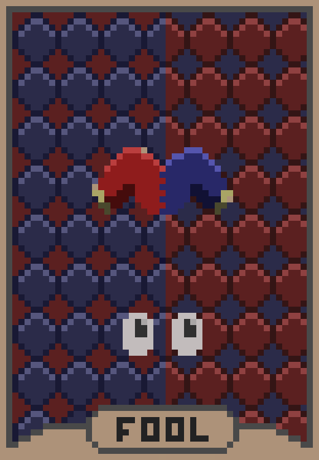
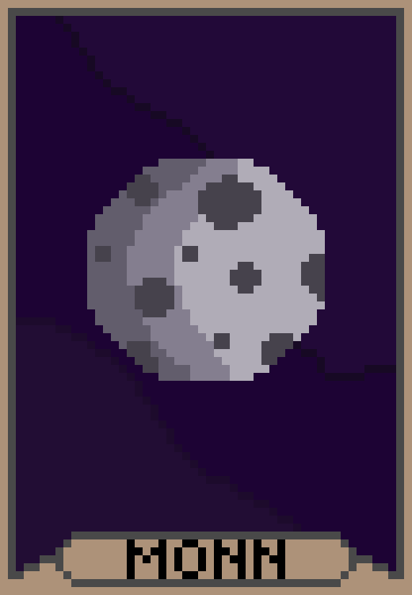
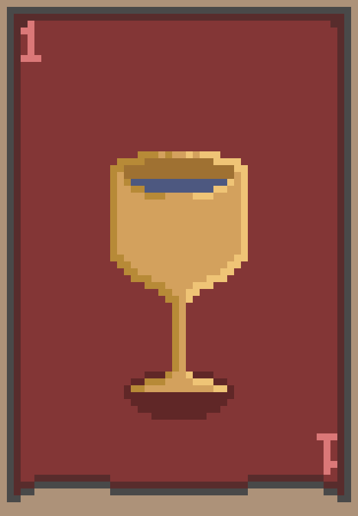
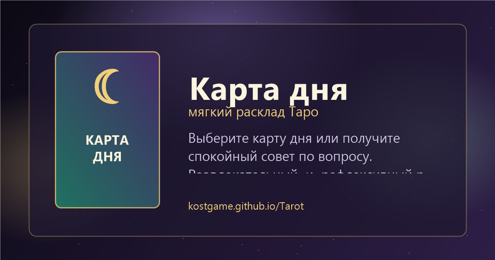
Карточка результата подходит для чата, сторис или личного дневника.
Вытянуть карту
Открыть fullscreen
Свайпнуть между картами
Свериться со справочником
Поделиться результатом
Не абстрактные функции
Утро, 08:40

Соберите день вокруг одного спокойного ритма: меньше рывков, больше последовательности.
Действие в UI: открыть карту дня и сохранить мысль на день.Вопрос перед разговором

Туз Кубков: начните не с аргументов, а с того, что для вас важно в отношениях.
Действие в UI: режим «Совет по вопросу».Учебная практика

Откройте справочник, сравните прямое и перевернутое значение, затем вернитесь к раскладу.
Действие в UI: справочник карт и image-only preview.Визуальные режимы
Статусы ниже взяты из текущих данных приложения. Частичные и major-only наборы не представлены как полные 78 карт.

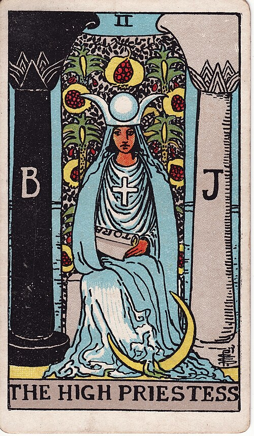
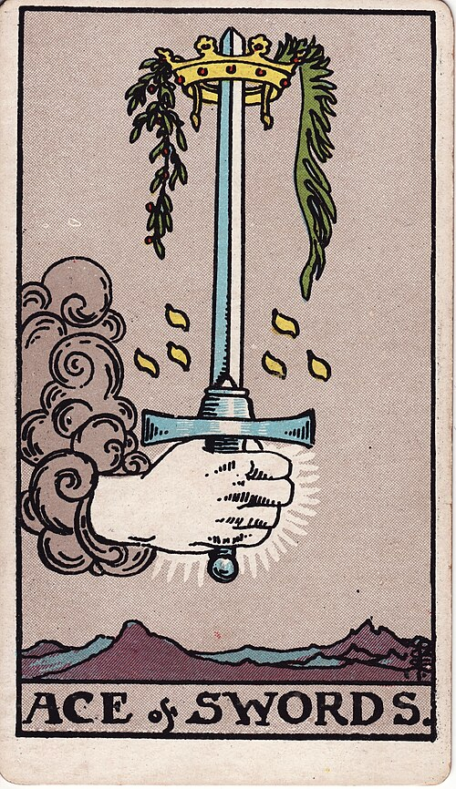
Базовый Rider-Waite-Smith: понятный визуальный язык для ежедневной практики и справочника.


Те же карты с более ночной обработкой: подходит для тихого вечернего чтения.
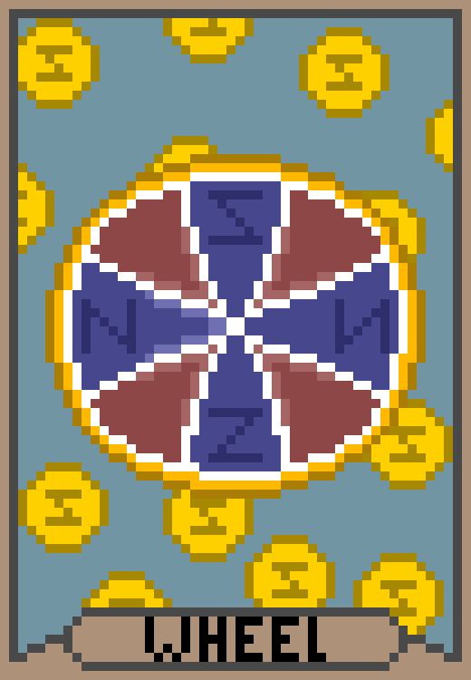
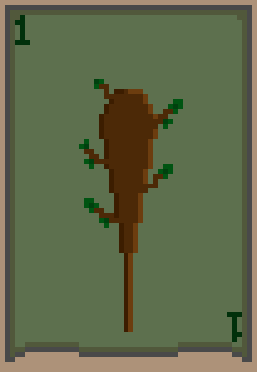
Пиксельная колода меняет тон страницы: меньше музейности, больше дневниковой игры.
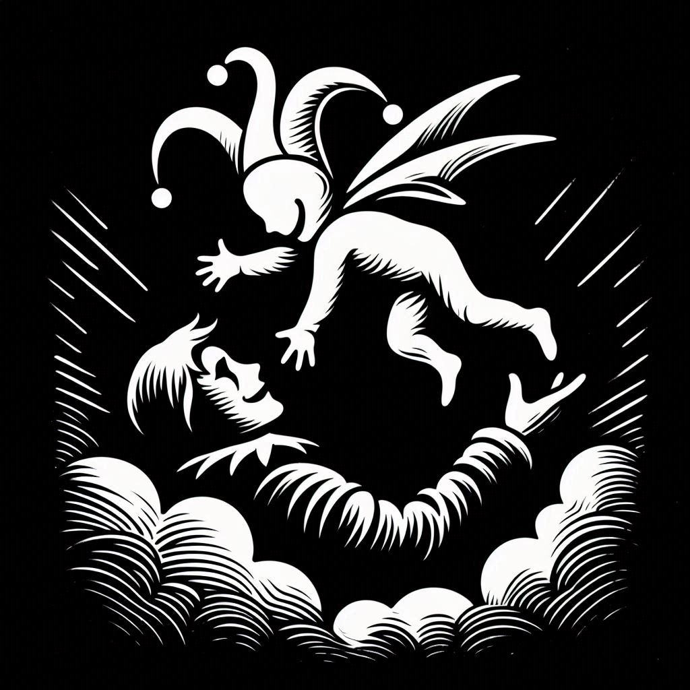
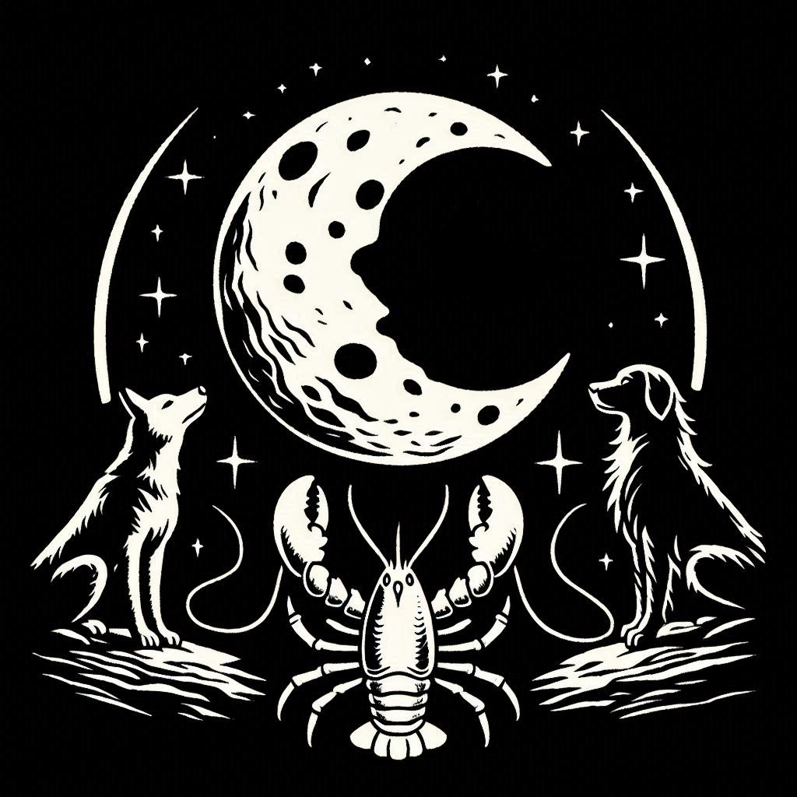
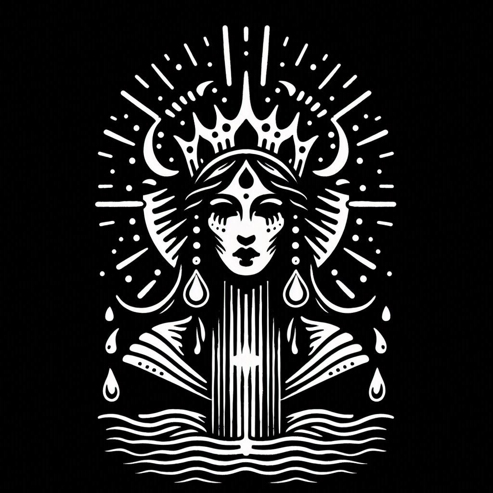
Темный набор для старших арканов и двора. Приложение не выдает его за полный 78-карточный набор.
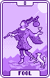
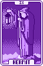
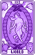
Черно-белая major-only колода: хороший режим для быстрых символических чтений.
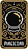
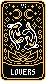
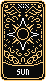
Яркая major-only версия для сторис, коротких чтений и визуальных сравнений.
Продуктовые режимы
Открываете приложение, вытягиваете одну карту и получаете короткий фокус без длинного расклада.
Формулируете ситуацию и читаете подсказку как повод подумать, а не как обещание будущего.
Смотрите значение карты, возвращаетесь к чтению и тренируете собственную интерпретацию.
Меняете визуальный язык: классика, темная версия, пиксельные и экспериментальные наборы.
Включаете дополнительные оттенки, если уже уверенно читаете прямые значения.
Генерируете карточку через canvas и отправляете ее в чат, сторис или себе в заметки.
Материал для запуска
Утро без рывков
Карта дня: УмеренностьСменить настроение
Та же практика, другая колода
Совет по вопросу
Начните с того, что важно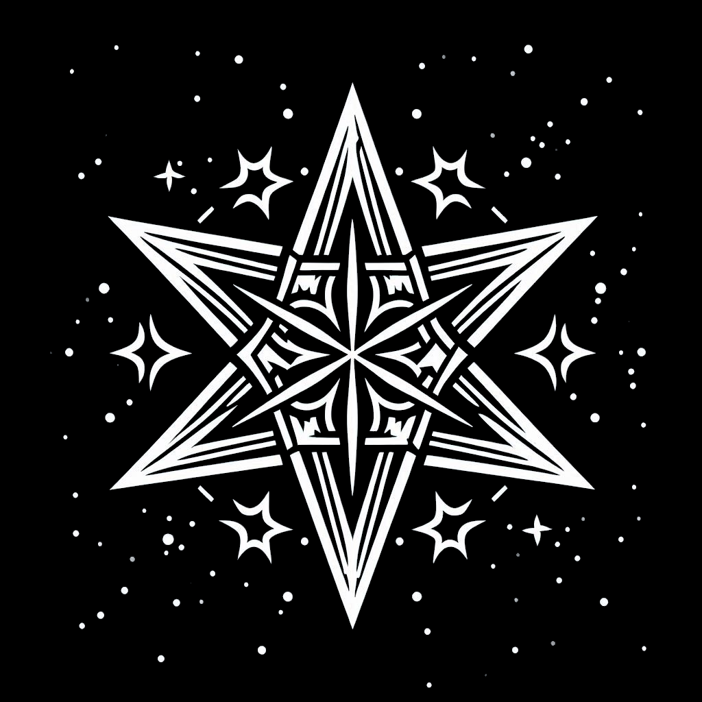
Экспериментальная колода
Veil of Fate: старшие + двор
Справочник
Сначала значение, потом своя формулировкаПоделиться
Готовая карточка для чатаОдин экран вместо сложного сервиса
Приложение остается статическим: без backend, авторизации и внешних API. Настройки живут локально на устройстве.
Открыть приложение